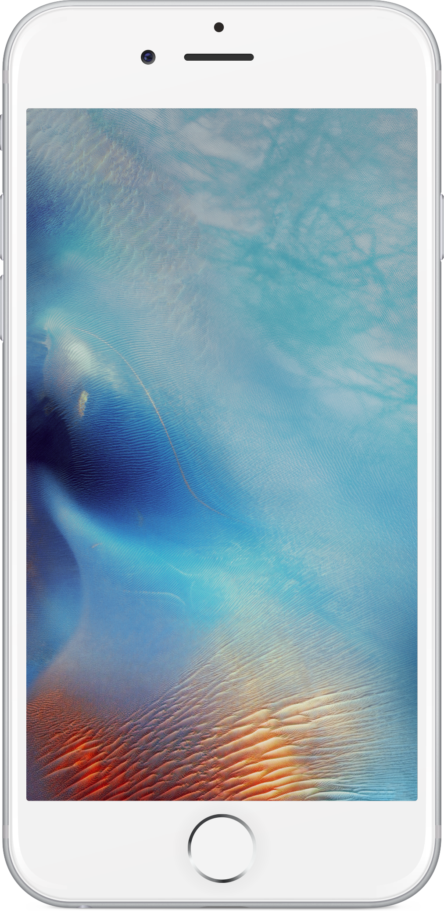
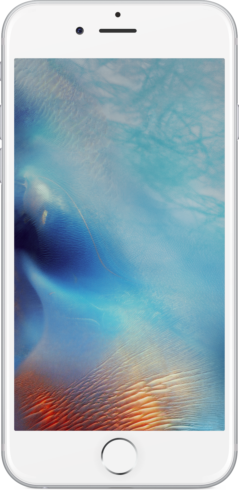

@Molovich
Schoenen gekocht voor Junior. Op twintig meter afstand van m’n huis. #tochnoggeslaagd #kosteenpaaruurtjesmaardanhebjeookwat
2 minutes ago
 

27-01-2018
Schoenen gekocht voor Junior. Op twintig meter afstand van m’n huis. #tochnoggeslaagd #kosteenpaaruurtjesmaardanhebjeookwat
2 minutes ago
In bus terug naar huis. Balen.
37 minutes ago
Godverdomme. Heb ik naar het magazijn gemaild, krijg ik mail terug dat het boek op de tweede verdieping is. Maar daar heb ik net gekeken! #bananenrepubliek
53 minutes ago
Nee, niet de Franse versie. Ik zoek de vertaling van Kousbroek. #stijloefeningen
1 hour ago
Met een medewerker van de bieb gezocht. Kon ook niks vinden. Zegt dat ik mailtje naar magazijn moet sturen. Duurt een kwartiertje. #alletijd
1 hour ago
De online catalogus van OBA zegt dat Stijloefeningen gewoon op de plank moet liggen. Nog maar even goed kijken. #erisnoghoop
1 hour ago
LOL
1 hour ago
Het postkantoor op de Raadhuisstraat bestaat ook niet meer.
1 hour ago
Verdomme. Tien boeken van Queneau, maar Stijloefeningen zit er niet bij! Je vindt nooit wat je zoekt. #storyofmylife
1 hour ago
De auto waarmee ze gekomen was, reed weg. Op zoek naar een parkeerplaats, denk ik. De vrouw moest erachteraan rennen. (2/2)
1 hour ago
Net vroeg een Franse vrouw mij waar het postkantoor was. Dat postkantoor staat hier al jaren niet meer. Heb haar naar de Raadhuisstraat gestuurd. (1/2)
1 hour ago
Jezus. Ik wist niet dat Amsterdam hier zo open lag. Overal bouwputten. #noordzuidlijn #bedanktgeertdales
1 hour ago
Halte CS. Zoon slaapt. Precies op tijd.
2 hours ago
Halte CS. Zoon slaapt. Precies op tijd.
2 hours ago
In bus 21. Naar bieb. Ben al een week op zoek naar Stijloefeningen van Queneau. Hoop dat ze ’m daar hebben. #lekkerliterair
2 hours ago